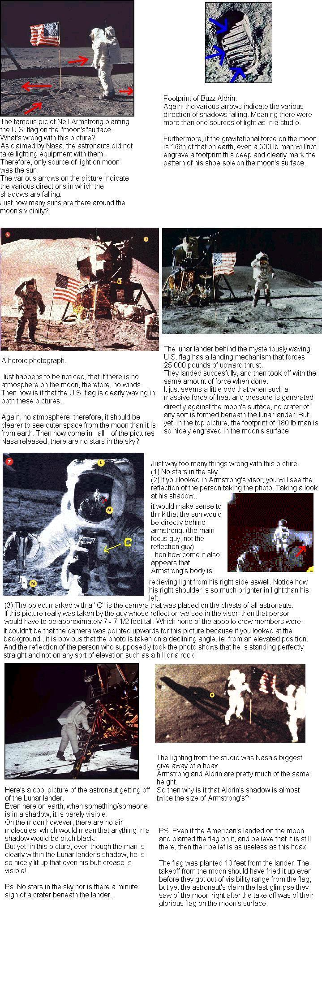

On Thursday, February 15th 2001 (and replayed on March 19), the Fox TV network aired a program called ``Conspiracy Theory: Did We Land on the Moon?'', hosted by X-Files actor Mitch Pileggi. The program was an hour long, and featured interviews with a series of people who believe that NASA faked the Apollo Moon landings in the 1960s and 1970s. The biggest voice in this is Bill Kaysing, who claims to have all sorts of hoax evidence, including pictures taken by the astronauts, engineering details, discussions of physics and even some testimony by astronauts themselves. The program's conclusion was that the whole thing was faked in the Nevada desert (in Area 51, of course!). According to them, NASA did not have the technical capability of going to the Moon, but pressure due to the Cold War with the Soviet Union forced them to fake it.
Sound ridiculous? Of course it does! It is. So let me get this straight right from the start: this program is an hour long piece of junk.
From the very first moment to the very last, the program is loaded with bad thinking, ridiculous suppositions and utterly wrong science. I was able to get a copy of the show in advance, and although I was expecting it to be bad, I was still surprised and how awful it was. I took four pages of notes. I won't subject you to all of that here; it would take hours to write. I'll only go over some of the major points of the show, and explain briefly why they are wrong. In the near future, hopefully by the end of the summer, I will have a much more detailed series of pages taking on each of the points made by the Hoax Believers (whom I will call HBs).
So let's take a look at the ``evidence'' brought out by the show. To make this easier, below is a table with links to the specific arguments.
Bad: Right at the beginning, they have a
disclaimer:
Good: The last thing the writers of this program want the viewers to
do is make an informed decision. If they did, they would have given equal time
to both sides of this controversy. Instead, the vast majority of the time is
given to the HBs, with only scattered (and very vague) dismissive statements by
skeptics. So the available information is really only what they tell you. Of
course, there are a lot of websites talking about this. I have a list of them
Bad: The show claims that 20% of Americans have doubts that we went to
the Moon.
Good: That number is a bit misleading.
The following program deals with a controversial subject. The theories
expressed are not the only possible explanation. Viewers are invited to make a
judgement based on all available information.
Although, if taken literally, 6% translates into millions of individuals, it is not unusual to find about that many people in the typical poll agreeing with almost any question that is asked of them -- so the best interpretation is that this particular conspiracy theory is not widespread.It also depends on what you mean by ``doubts''. Does that mean someone who truly doesn't believe man ever went to the Moon, or just that it's remotely possible that NASA faked it? Those are very different things. Not only does the program not say, but they don't say where they found the statistic they quote either.
Bad: The program talks about the movie ``Capricorn 1'', an entertaining if ultimately silly movie about how NASA must fake a manned Mars expedition. The program says ``The Apollo footage [from the surface of the Moon] is strikingly similar to the scenes in ``Capricorn 1''.
Good: Is it just an amazing coincidence that the actual Moon images look like the movie, or is it evidence of conspiracy? Neither! The movie was filmed in 1978, many years after the last man walked on the Moon. The movie was made to look like the real thing! This statement by the program is particularly ludicrous, and indicates just how far the producers were willing to go to make a sensational program.
Good: The stars are there! They're just too faint to be seen.
This is usually the first thing HBs talk about when discussing the Hoax. That amazes me, as it's the silliest assertion they make. However, it appeals to our common sense: when the sky is black here on Earth, we see stars. Therefore we should see them from the Moon as well.
I'll say this here now, and return to it many times: the Moon is not the Earth. Conditions there are weird, and our common sense is likely to fail us.
The Moon's surface is airless. On Earth, our thick atmosphere scatters sunlight, spreading it out over the whole sky. That's why the sky is bright during the day. Without sunlight, the air is dark at night, allowing us to see stars.
On the Moon, the lack of air means that the sky is dark. Even when the Sun is high off the horizon during full day, the sky near it will be black. If you were standing on the Moon, you would indeed see stars, even during the day.
So why aren't they in the Apollo pictures? Pretend for a moment you are an astronaut on the surface of the Moon. You want to take a picture of your fellow space traveler. The Sun is low off the horizon, since all the lunar landings were done at local morning. How do you set your camera? The lunar landscape is brightly lit by the Sun, of course, and your friend is wearing a white spacesuit also brilliantly lit by the Sun. To take a picture of a bright object with a bright background, you need to set the exposure time to be fast, and close down the aperture setting too; that's like the pupil in your eye constricting to let less light in when you walk outside on a sunny day.
So the picture you take is set for bright objects. Stars are faint objects! In the fast exposure, they simply do not have time to register on the film. It has nothing to do with the sky being black or the lack of air, it's just a matter of exposure time. If you were to go outside here on Earth on the darkest night imaginable and take a picture with the exact same camera settings the astronauts used, you won't see any stars!
It's that simple. Remember, this the usually the first and strongest argument the HBs use, and it was that easy to show wrong. Their arguments get worse from here.
Bad: In the pictures taken of the lunar lander by the astronauts, the TV show continues, there is no blast crater. A rocket capable of landing on the Moon should have burned out a huge crater on the surface, yet there is nothing there.
Good: When someone driving a car pulls into a parking spot, do they do it at 100 kilometers per hour? Of course not. They slow down first, easing off the accelerator. The astronauts did the same thing. Sure, the rocket on the lander was capable of 10,000 pounds of thrust, but they had a throttle. They fired the rocket hard to deorbit and slow enough to land on the Moon, but they didn't need to thrust that hard as they approached the lunar surface; they throttled down to about 3000 pounds of thrust.
Now here comes a little bit of math: the engine nozzle was about 54 inches across (from
the Encyclopaedia Astronautica), which means it had an area of 2300 square inches. That in turn means that the thrust generated a pressure of only about 1.5 pounds per square inch! That's not a lot of pressure. Moreover, in a vacuum, the exhaust from a rocket spreads out very rapidly. On Earth, the air in our atmosphere constrains the thrust of a rocket into a narrow column, which is why you get long flames and columns of smoke from the back of a rocket. In a vacuum, no air means the exhaust spreads out even more, lowering the pressure. That's why there's no blast crater! Three thousand pounds of thrust sounds like a lot, but it was so spread out it was actually rather gentle.
[Note added December 6, 2001: Originally in this section I said that the engines
also cut off early, before the moment of touchdown, to prevent dust from getting
blown around and disturbing the astronauts' view of the surface. This was an
incorrect assertion; it was known that dust would blow around before the
missions were launched, and steps were taken to make sure the astronauts knew
their height above the surface. Anyway, the incorrect section has been removed.]
Bad: The next argument presented on the show deals with the lunar
dust. As the lander descended, we clearly see dust getting blown away by the
rocket. The exhaust should have blown all the dust away, yet we can clearly see
the astronauts' footprints in the dust mere meters from the lander. Obviously,
when NASA faked this they messed it up.
Good: Once again, the weird alien environment of the Moon comes to
play. Imagine taking a bag of flour and dumping it onto your kitchen floor
(kids: ask your folks first!). Now bend over the pile, take a deep breath, and
blow into it as hard as you can. Poof! Flour goes everywhere. Why? Because the
momentum of your breath goes into the flour, which makes it move. But note that
the flour goes up, and sideways, and aloft into the air. If you blow hard
enough, you might see little curlicues of air lifting the flour farther than
your breath alone could have, and doing so to dust well outside of where your
breath actually blew.
That's the heart of this problem. We are used to air helping us blow things
around. The air itself is displaced by your breath, which pushed on more air,
and so on. On the Earth, your breath might blow flour that was dozens of
centimeters away, even though your actual breath didn't reach that far. On the
Moon, there is no air. The only dust that gets blown around by the exhaust of
the rocket (which, remember, isn't nearly as strong as the HBs claim) is the
dust physically touched by the exhaust, or dust hit by other bits of
flying dust. In the end, only the dust directly under or a bit around the rocket
was blown out by the exhaust. The rest was left where it was. Ironically, the
dust around the landing site was probably a bit thicker than before,
since the dust blown out would have piled up there.
I can't resist: another Hoax Believer argument bites the dust.
Bad: The next evidence also involves pictures. In all the pictures
taken by the astronauts, the shadows are not black. Objects in shadow can be
seen, sometimes fairly clearly, including a plaque on the side of the lander
that can be read easily. If the Sun is the only source of light on the Moon, the
HBs say, and there is no air to scatter that light, shadows should be utterly
black.
Good: This is one of my favorite HB claims. They give you the answer
in the claim itself: "...if the Sun is the only source of light..." It
isn't. Initially, I thought the Earth was bright enough to fill in the
shadows, but subsequently realized that cannot be the case. The Earth is a
fraction of the brightness of the Sun, not nearly enough to fill in the shadows.
So then what is that other light source?
The answer is: The Moon itself. Surprise! The lunar dust has a peculiar
property: it tends to reflect light back in the direction from where it came. So
if you were to stand on the Moon and shine a flashlight at the surface, you
would see a very bright spot where the light hits the ground, but, oddly,
someone standing a bit to the side would hardly see it at all. The light is
preferentially reflected back toward the flashlight (and therefore you), and not
the person on the side.
Now think about the sunlight. Let's say the sun is off to the right in a
picture. It is illuminating the right side of the lander, and the left is in
shadow. However, the sunlight falling beyond the lander on the left is being
reflected back toward the Sun. That light hits the surface and reflects to the
right and up, directly onto the shadowed part of the lander. In other
words, the lunar surface is so bright that it easily lights up the shadows of
vertical surfaces.
This effect is called heiligenschein (the German word for halo). You can find
some neat images of it at
[Note added June 29, 2001: A nifty demonstration of the shadow filling
was done by Ian Goddard and
can be found here. His demos are great, and really drive the point home.
Bad: Another argument by the HBs deals with shadows. Several photos
from the Moon are shown where objects on the lunar landscape have long shadows.
If the Sun were the only light source, the program claims, the shadows should be
parallel. The shadows are not parallel, and therefore the images are fake.
Good: This is an interesting claim on the part of the HBs, because on
the surface (haha) it seems to make sense. However, let's assume the shadows are
not parallel. One explanation is that there are (at least) two light sources,
and that is certainly what many HBs are trying to imply. So if there are
multiple light sources, where are the multiple shadows? Each object casts
one shadow, so there can only be one light source.
Another explanation is that the light source is close to the objects; then it
would also cast non-parallel shadows. However, a distant source can as well! In
this case, the Sun really is the only source of light. The shadows are not
parallel in the images because of perspective. Remember, you are looking at a
three-dimensional scene, projected on a two-dimensional photograph. That causes
distortions. When the Sun is low and shadows are long, objects at different
distance do indeed appear to cast non-parallel shadows, even here on Earth. An
example of that
Incidentally, the bright Earth in the sky will also cast shadows, but those would be very faint compared to the ones made by the Sun. So in a sense there are multiple shadows, but like not being able to see stars, the shadows are too faint to be seen against the very bright lunar surface. Again, you can test this yourself: go outside during full Moon and you'll see your shadow. Then walk over to a streetlamp. The light from the streetlamp will wash out the shadow cast by the Moon. You might still be able to see it faintly, but it would difficult against the much brighter landscape.
[Note added June 29, 2001: Again, check out Ian
Goddard's work for more about this.
Bad: The program has two segments dealing with what they call
``identical backgrounds''. In one, they show the lunar lander with a mountain in
the background. They then show another picture of the same mountain, but no
lander in the foreground at all. The astronauts could not have taken either
picture before landing, of course, and after it lifts off the lander leaves the
bottom section behind. Therefore, there would have been something in the
second image no matter what, and the foreground could not be empty. Obviously,
the mountain background is a fake set, and was reused by NASA for another shot.
Good: Actually, the pictures are real, of course. As always, repeat
after me: the Moon is not the Earth. On the Earth, distant objects are obscured
a bit by haze in the air, and we use that to mentally gauge distances. However,
with no air, an object can be very far away on the Moon and still be crisp and
sharp to the eye. You can't tell if a boulder is a meter across and 100 meters
away, or 100 meters across and 10 kilometers away!
That's what's going on here. The lander is close to the astronaut in the
first picture, perhaps a 20 or 30 meters away. The mountain is kilometers away.
For the second picture, the astronaut merely moved a few hundred meters to the
side. The lander was then out of the picture, but the mountain hardly moved at
all! If you look at the scene carefully, you'll see that all the rocks and
craters in the foreground changes between the two pictures, just as you'd expect
if the astronaut had moved to the side a ways between the two shots. It's not
fraud, it's
Another example of the difficulty in estimating distance is due to the shapes of the rocks on the Moon. A rock small enough to sit down on doesn't look fundamentally different from one bigger than your house. Humans also judge distance by using the relative sizes of objects. We know how big a person is, or a tree, so the apparent size of the object can be used to estimate the distance. If we don't know how big the object is, we can be fooled about its distance.
For an outstanding example of this, take a look at video taken during Apollo 16. There is a boulder in the background that looks to be about 3 or 4 meters (10-13 feet) high. About 3/4 of the way through the segment the astronauts walk over to it. Amazingly, that boulder is the size of a large house! Without knowing how big the rock was when we first see it, we have no way to judge distances. That huge rock looks like a medium sized one until we have some way to directly judge its size; in this case, by looking at the tiny astronauts next to it. [My thanks to Bad Reader Martin Michalak for bringing this video to my attention. My very special thanks goes to Charlie Duke (yes, the Charlie Duke, Apollo astronaut and lunar lander pilot) who emailed me (!) about the difficulty in judging distances due to not knowing the sizes of rocks.]
I will admit the Fox program had me for a while on this one; I couldn't figure it out. But then I got a note from Bad Reader David Bailey, who set me straight. However, the producers of the show should have talked to some real experts before saying such a silly thing as this. If they had checked with the folks who run the Apollo Lunar Surface Journal, for example, they would have been set straight too.
NEW! (February 19, 2001): I
found a site that has an animation where the two images of the mountain are
superimposed. You need Flash for it, but it's a great animation. The beauty
of it is that you can see changes in the mountain range due to parallax!.
In other words, this animation is support that the images are real and are not
using a fake backdrop. The real beauty of this animation is that the person who
put it together is an HB. I like the irony of linking to that animation and
using it to show that it is indeed evidence that Apollo did go to the Moon. I
love the web!
Bad: The other ``identical background'' segment shows an astronaut on
a hilltop. A second video shows two astronauts on the same hill (and this time
it really is the same hill), and claims that NASA itself says these two videos
were taken on two different hills separated by many kilometers. How can this be?
They are obviously the same hill, so NASA must be lying!
Good: Never attribute to malice what you can attribute to a mistake. A
videotape about Apollo 16 ironically titled ``Nothing So Hidden...'' released by
NASA does indeed make that claim, but in this case it looks to me to be a simple
error. I asked Eric Jones, who is the editor of the Apollo Lunar Surface
Journal, and he told me those two clips were taken about three minutes apart.
Eric's assistant, Ken Glover, uncovered this problem. He sent me this transcript
(which I edited a bit to make links to the video clips) of the Fox show with his
comments, which I will highlight in red:
[...]
[Video showing John Young at Station 4 on EVA-2, with Fox
caption "Day One". Click
Narrator: Background discrepancies are also apparent in the lunar video.
here
for the transcript and here
for the RealVideo clip.]
Narrator: This shot was taped in what was purported to be the first of Apollo 16's lunar excursions.
[Audio of John Young dubbed over clip: "Well, I
couldn't pick a better spot", actual MET of 123:58:46]
[Next, video of John Young and Charlie Duke at Station 4, EVA-2. In reality,
about three minutes after the first clip. Fox caption "Day Two". Click
here
for the transcript and here
for the RealVideo clip.]
Narrator: And this video was from the next day, at a different location.
[Audio of Charlie Duke dubbed over clip: "That is the most beautiful sight!", actual MET of 124:03:01]
Narrator: NASA claims the second location was two-and-a-half miles away, but when one video was superimposed over the other the locations appear identical.
[Audio of John Young dubbed over "Day Two" video: " It's absolutely unreal!", actual MET 144:16:30]
Narrator: Conspiracy theorists claim that even closer examination of the photos suggest evidence of doctoring.
That last line is pretty funny. The audio you hear of the astronauts in those clips was actually all from different times than the video!
So that's why the hill looks the same. It's the same hill, and the two clips
were not taken a day apart, but from three minutes apart or so. Again, had the
program producers bothered to check their sources, they would have received a
prompt answer. That's all I did: I emailed the editor of the ALSJ. It was pretty
easy to do, and he answered me in minutes.
Bad: Ralph Rene, a self-proclaimed physicist, claims that the
astronauts shifting in the cabin would change the center of mass, throwing the
lunar lander off balance. They couldn't compensate for this, which would have
crashed the lander. Thus, the landing was faked.
Good: Rene is wrong. Evidently he doesn't know how the internet works
either, because there is a website which describes how the attitude control was
maintained on the lander during descent and ascent; it's the
[Note (July 20, 2001): My thanks again to Apollo astronaut Charlie Duke for correcting a technical error in a previous version of this section. After describing the above scenario to me, he said the ascent stage of the lander was "a sporty ride".]
Bad: The program claims that when the top half of the lander took off
from the Moon to bring the astronauts back into orbit, there was no flame from
the rocket. Obviously, every rocket has a visible flame, so the takeoff was
faked.
Good: There is actually a simple reason why you cannot see the flame
from the lander when it took off. The fuels they used produced no visible flame!
The lander used a mix of hydrazine and dinitrogen tetroxide (an oxidizer). These
two chemicals ignite upon contact and produce a product that is transparent.
That's why you cannot see the flame. We expect to see a flame because of the
usual drama of liftoff from the Earth; the flame and smoke we see from the
Shuttle, for example, is because the solid rocket boosters do actually produce
them, while the lunar lander did not.
I heard an account that the cameras used for the ascent of the lander were fairly primitive, even for that era (this is usually the case in space travel, where it takes extensive testing to make sure things work properly; during that time the state of the art advances). Even if it were visible, the flash of the exhaust may have easily been missed by those cameras.
[Note added April 9, 2001: My original assertion about not seeing the
flame was because the Moon has no air, and we see flame from rockets on Earth
because we have an atmosphere. This does have some effect (the pressure of air
constrains the rocket exhaust and helps produce the effect we see) but the
larger reason the flame is invisible is due to the fuel used. I gratefully thank
the dozens of people who sent me email about this.]
Bad: When the movies of the astronauts walking and driving the lunar
rover are doubled in speed, they look just like they were filmed on Earth and
slowed down. This is clearly how the movies were faked.
Good: This was the first new bit I have seen from the HBs, and it's
funny. To me even when sped up, the images didn't look like they were filmed in
Earth's gravity. The astronauts were sidling down a slope, and they looked weird
to me, not at all like they would on Earth. I will admit that if wires were
used, the astronauts' gait could be simulated.
However, not the rover! If you watch the clip, you will see dust thrown up by
the wheels of the rover. The dust goes up in a perfect parabolic arc and falls
back down to the surface. Again, the Moon isn't the Earth! If this were filmed
on the Earth, which has air, the dust would have billowed up around the wheel
and floated over the surface. This clearly does not happen in the video clips;
the dust goes up and right back down. It's actually a beautiful demonstration of
ballistic flight in a vacuum. Had NASA faked this shot, they would have had to
have a whole set (which would have been very large) with all the air
removed. We don't have this technology today!
This is another case of selective vision on the part of the HBs.
Bad: When the astronauts are assembling the American flag, the flag
waves. Kaysing says this must have been from an errant breeze on the set. A flag
wouldn't wave in a vacuum.
Good: Of course a flag can wave in a vacuum. In the shot of the
astronaut and the flag, the astronaut is rotating the pole on which the flag is
mounted, trying to get it to stay up. The flag is mounted on one side on the
pole, and along the top by another pole that sticks out to the side. In a vacuum
or not, when you whip around the vertical pole, the flag will ``wave'', since it
is attached at the top. The top will move first, then the cloth will follow
along in a wave that moves down. This isn't air that is moving the flag, it's
the cloth itself.
New stuff added March 1, 2001: Many HBs show a picture of an astronaut
standing to one side of the flag, which still has a ripple in it (for example,
The answer is, it isn't waving. It looks like that because of the way the flag was deployed. The flag hangs from a horizontal rod which telescopes out from the vertical one. In Apollo 11, they couldn't get the rod to extend completely, so the flag didn't get stretched fully. It has a ripple in it, like a curtain that is not fully closed. In later flights, the astronauts didn't fully deploy it on purpose because they liked the way it looked. In other words, the flag looks like it is waving because the astronauts wanted it to look that way. Ironically, they did their job too well. It appears to have fooled a lot of people into thinking it waved.
This explanation comes from NASA's wonderful spaceflight web page. For those of you who are conspiracy minded, of course, this doesn't help because it comes from a NASA site. But it does explain why the flag looks as it does, and you will be hard pressed to find a video of the flag waving. And if it was a mistake caused by a breeze on the set where they faked this whole thing, don't you think the director would have tried for a second take? With all the money going to the hoax, they could afford the film!
Note added March 28, 2001: One more thing. Several readers have
pointed out that if the flag is blowing in a breeze, why don't we see dust
blowing around too? Somehow, the HBs' argument gets weaker the more you think
about it.
Bad: The program makes a big deal out of how well the pictures taken
from the Moon were exposed and set. Every picture we see is just right, with the
scene always centered perfectly. However, the cameras were mounted on the front
of the astronauts' spacesuit, and there was no finder. They couldn't have taken
perfect pictures every time!
Good ... and of course, no one claims they did. Thousands of pictures
were taken on the Moon, and the ones you see will tend to be the good ones. If
Buzz Aldrin accidentally cut off Neil Armstrong's head, you probably won't see
that image in a magazine. Also, everything done on the Moon was practiced
endlessly by the astronauts. The people working on the mission knew that these
pictures would be some of the most important images ever taken, so they would
have taken particular care in making sure the astronauts could do it cold. When
fabled astronaut Story Musgrave replaced a camera on board the Hubble Space
Telescope in 1993, someone commented that he made it look easy.
"Sure," he replied, "I had practiced it thousands of times!"
The program goes farther than this, though: they actually contacted the man
who designed the cameras for the astronauts. When they asked him why the
pictures were always perfect, he hemmed and hawed, and finally admitted he had
no answer for that. This is hardly evidence that NASA must have faked the
missions. All it means is that he couldn't think of anything while sitting on
camera! I think this is pretty evil of the program producers to do this; a bit
of editing on their part makes it looks like they completely baffled an expert.
Bad: Crosshairs were etched in the astronauts' cameras to better help
measure objects in the pictures. However, in several images, it looks like the
objects are actually in front of the crosshairs, which is impossible if the
crosshairs were inside the camera! Therefore, the images were faked.
Good: This argument is pretty silly. Do the HBs think that NASA had
painted crosshairs on the set behind the astronauts? I heard one HB claim the
crosshairs were added later on, and NASA had messed up some of the imaging.
That's ridiculous! Why add in crosshairs later? Cameras equipped with crosshairs
have been used for a long time, and it would have been easy to simply use some
to take pictures on the faked set. Clearly, the HBs are wrong here, but the
images do look funny. What happened?
What happened becomes clearer when you look more closely at the images. The
times it looks like an object is in front of the crosshair (because the
crosshair looks blocked by the object) is when the object photographed is white.
The crosshair is black. Have you ever taken an image that is overexposed? White
parts bleed into the film around them, making them look white too. That's all
that happened here; the white object in the image ``fills in'' the black
crosshair. It's a matter of contrast: the crosshair becomes invisible because
the white part overwhelms the film. This is basic photography.
[Note (added February 18, 2001): I have been informed by David Percy,
a photographer quoted in the Fox show, that he does indeed believe that man went
to the Moon, but he believes there are anomalies in the imagery taken which
``put into question many aspects of the missions'', which is a different matter.
While I disagree that there are anomalies, I have edited out what is essentially
a personal attack on Mr. Percy that I had here originally. It is an easy matter
to let one's emotions get carried away when writing these essays, and I
apologize to him and my readers for letting that get in. I make it a policy to
correct Bad Astronomy based on facts, not personalities.]
[Note added June 29, 2001: Again,
Bad: A big staple of the HBs is the claim that radiation in the van
Allen Belts and in deep space would have killed the astronauts in minutes. They
interview a Russian cosmonaut involved in the USSR Moon program, who says that
they were worried about going in to the unknowns of space, and suspected that
radiation would have penetrated the hull of the spacecraft.
Good: Kaysing's exact words in the program are ``Any human being
traveling through the van Allen belt would have been rendered either extremely
ill or actually killed by the radiation within a short time thereof.''
This is complete and utter nonsense. The van Allen belts are regions above
the Earth's surface where the Earth's magnetic field has trapped particles of
the solar wind. An unprotected man would indeed get a lethal dose of radiation, if
he stayed there long enough. Actually, the spaceship traveled through the
belts pretty quickly, getting past them in an hour or so. There simply wasn't
enough time to get a lethal dose, and, as a matter of fact, the metal hull of
the spaceship did indeed block most of the radiation. For a detailed explanation
of all this, my fellow Mad Scientist
It was also disingenuous of the program to quote the Russian cosmonaut as
well. Of course they were worried about radiation before men had gone into the
van Allen belts! But tests done by NASA showed that it was possible to not only
survive such a passage, but to not even get harmed much by it. It looks to me
like another case of convenient editing by the producers of the program.
Very, very Bad: Kaysing says that the Apollo 1 fire that killed Roger
Chaffee, Ed White and Gus Grissom was no accident. Grissom was ready to talk to
the press about the Moon hoax, so NASA killed him. Kaysing says NASA also killed
other people who were about to blow the whistle as well.
This is so disgusting I have a hard time writing a coherent reply. Kaysing
has no grasp of basic physics, photography or even common sense, but he accuses
NASA of killing people to shut them up. That is a particularly loathsome
accusation.
The utter bilge pumped out in this program goes on and on, and indeed, if you
go to the HBs websites you can read more than any brain can handle. I have read
literally dozens of things that ``prove'' the landings were faked, and each one
is rather easily shown to be wrong by anyone with experience in such things. I
think the problem here is twofold: we tend to want to believe (or at least
listen to) conspiracy theories, and this one is a whopper. Also, the evidence is
presented in such a way that, if you are unfamiliar with the odd nature of the
vacuum of space and of space travel, it sounds reasonable.
But it isn't reasonable. Their evidence is actually as tenuous as the vacuum
of space itself. I find it amazing that they are so willing to scrutinize every
available frame of data from the astronauts, yet miss the most obvious thing
right in front of them. Fox television and the producers of this program should
be ashamed of themselves. Even worse, the Fox Family Channel broadcast a show
just last year that was skeptical and even handed about the Moon Hoax!
Amazingly, Mitch Pileggi hosted that program as well.
I'll end this on one more bit the HBs don't talk about. When Jim Lovell, two
time Apollo astronaut and commander of the ill-fated Apollo 13 mission, was told
about Kaysing's claims, Lovell called him a kook. Kaysing, ever the rational
thinker, sued Lovell for slander. Imagine: Kaysing, who says that NASA murdered
three men outright and arranged for the murders of others, sued Commander James
Lovell for slander! After some time, a judge wisely threw the case out of court.
There's still hope.
Links
on
my Bad Misconceptions page.
What's funny though is how that site pulls out the same tired arguments that are easy to show wrong, yet stands by them dogmatically. For example, Clyde Lewis, the webmaster of the site, shows a photo of the flag waving and asks how it can be waving; I already showed how it can appear to wave on this page earlier. In his image, the bottom corner of the flag is not flat, which is most likely simply residual rippling from the astronaut's twisting the pole. Remember, without air, there is nothing to dampen the rippling, so the flag actually can appear to wave as if from a breeze for a few moments.
This is hardly evidence of a hoax. Lewis goes on and on, bringing out the radiation arguments, the no stars arguments, on and on, like these are either new or damning, when they are neither.
Of course, I am trying to debunk the conspiracy theorists, but unlike them, I want people to look at their evidence rationally and critically, and not swallow it whole. It'll choke you if you do.
Finally, one last note: If I weren't a hard-headed scientist, I'd wonder if some cosmic force were at work sometimes. I went to a website that creates anagrams, that is, rearranges letters in a word to spell other words. I put in "The Bad Astronomer", and one the the anagrams was MOON TRASH DEBATER. I think that's pretty cool.